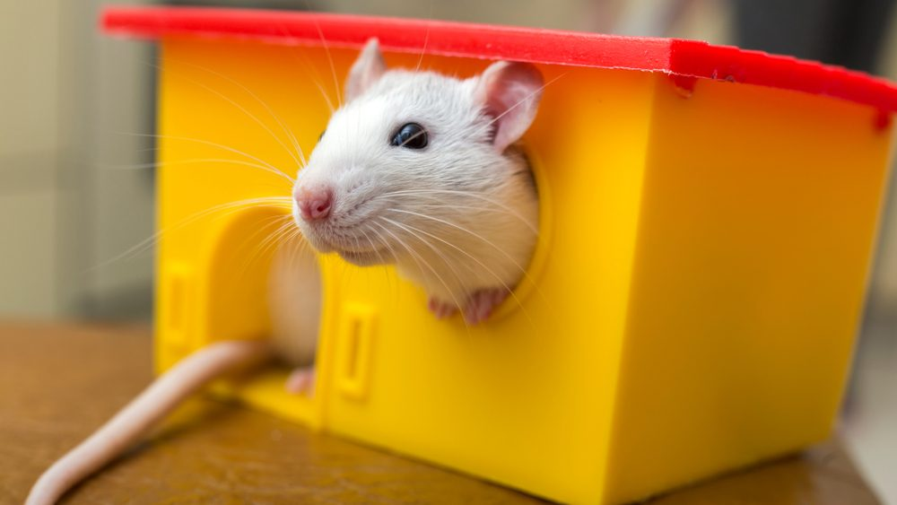
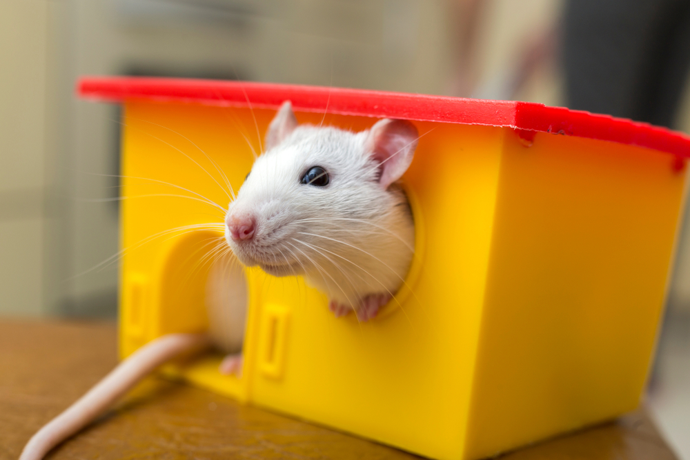

Stimulating environments boost the brain – Now scientists have identified many of the genes responsible
aperture':'0','credit':'Shutterstock','camera':'','caption':'','created_timestamp':'0','copyright':'Copyright (c) 2019 Bilanol\/Shutterstock.No use without permission.','focal_length':'0','iso':'0','shutter_speed':'0','title':'White,Funny,Domestic,Pet,Rat,And,A,Toy,House.','orientation':'1'}' data-image-title='White,Funny,Domestic,Pet,Rat,And,A,Toy,House.'data-large-file='https://frontiersinblog.files.wordpress.com/2021/05/shutterstock_1475123579-edited.jpg?w=940' data-medium-file='https://frontiersinblog.files.wordpress.com/2021/05/shutterstock_1475123579-edited.jpg?w=300' data-orig-file='https://frontiersinblog.files.wordpress.com/2021/05/shutterstock_1475123579-edited.jpg' data-orig-size='1000,563' data-permalink='https://blog.frontiersin.org/whitefunnydomesticpetratandatoyhouse-2/' src='https://frontiersinblog.files.wordpress.com/2021/05/shutterstock_1475123579-edited.jpg'>
Posted On: 2021-05-13T00:00:00
Posted By: Mischa Dijkstra


Content Date: 2021-05-13
Download Date: 2021-07-10
Document ID: L0C04F13D